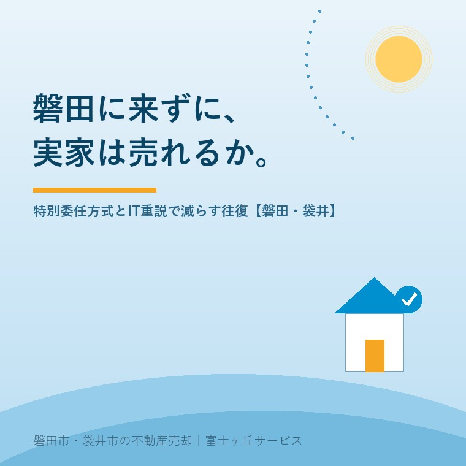

2026年8月16日｜カテゴリ：売却実務／制度と手続き

この記事の要点
Q. お盆に磐田の実家に帰って、売ることを決めました。ただ私は東京で仕事をしていて、そう何度も帰れません。売却が終わるまで、あと何回帰らないといけませんか。
A. 制度をきちんと使えば、多くの場合「あと1回」まで減らせます。2026年3月に、そのための最後のピースが入りました。令和8年3月1日、不動産登記に「登記原因証明情報の特別委任方式」の運用が始まりました（令和7年12月9日付 法務省民二第1578号）。司法書士に特別の委任をすれば、売主本人の電子署名がなくても、登記原因証明情報が適式なものとして扱われます。対象は売買・贈与による所有権移転登記と、抵当権の設定・抹消登記です。ここに、令和3年3月30日から本格運用されているIT重説と、令和4年5月18日施行の重要事項説明書等の電磁的方法による提供が重なります。整理すると、①媒介契約 ②重要事項説明 ③売買契約 ④決済・登記──この4つは、遠隔でも成立させられる仕組みが揃いました。逆に、残置物の片づけ、境界の立会い、鍵の引渡しは現地でしかできません。減らせる往復と、減らせない往復を先に分けることが、遠方の売却では最大の節約になります。磐田市・袋井市では、介護施設の運営から不動産事業を始めた富士ヶ丘サービスのような地域密着の会社に相談するという選択肢があります。
お盆に帰省されて、実家の中を見て、きょうだいで話をして、「売ろう」と決めた。そして新幹線に乗って東京へ戻る。
帰りの車内で、たいていの方がこう考えます。「これから、あと何回このルートを往復するんだろう」。
磐田市も袋井市も、東海道新幹線の駅がありません。掛川駅か浜松駅で在来線に乗り換えるか、車で来るか。東京から日帰りは可能ですが、一日仕事です。有給を何日使うことになるのか。それが分からないまま進むのは不安です。
今日は、その回数の話をします。そして、2026年3月に始まった新しい制度で、そのうち1回が減ったという話をします。制度は2026年8月16日時点で法務省・法務局・国土交通省が公表している内容に沿って書きます。
相続した実家を売る場合、売主が現地に行く場面は、伝統的には次のとおりでした。
| 場面 | 内容 | 従来 |
|---|---|---|
| ①査定・媒介契約 | 不動産会社に見てもらい、依頼を決める | 来訪 |
| ②残置物・片づけ | 家財の仕分け、処分の手配 | 来訪（必須） |
| ③境界の立会い | 隣地の所有者と現地で確認 | 来訪（多くの場合必須） |
| ④重要事項説明 | 宅地建物取引士による説明 | 来訪 |
| ⑤売買契約 | 契約書に署名押印、手付金の受領 | 来訪 |
| ⑥決済・登記 | 残代金の受領、所有権移転登記 | 来訪 |
6回。これが「実家じまいは大変だ」と言われる理由のひとつです。東京から6往復すれば、交通費だけで相当な額になります。有給も足りません。
この6つのうち、④⑤⑥は「制度で減らせる」ものでした。そして2026年3月、その最後の1つに答えが出ました。
法務局の公表によれば、令和8年3月1日から、不動産登記に「登記原因証明情報の特別委任方式」の運用が始まりました。根拠は令和7年12月9日付 法務省民二第1578号です。オンライン申請の利用促進が目的とされています。
何が変わったのか。これまで、フルオンラインで登記を申請しようとすると、売主本人の電子署名が必要でした。マイナンバーカードを持っていて、電子署名の環境があって、操作にも慣れている──そういう方でなければ、結局は紙と実印に戻るしかなかった。
特別委任方式は、ここを変えます。
司法書士等が代理人として電子申請の方法により権利に関する登記を申請する場合において、添付情報として提供される登記原因証明情報については、登記義務者の電子署名が行われていないものであっても、適式なものとして取り扱う──これが特別委任方式です。
売主が電子署名をしなくてよくなった。その代わり、司法書士が自ら登記原因となる事実または法律行為を確認し、それを記録して、自分の電子署名を付す。専門家が責任を引き受けることで、本人の負担を外す設計です。
法務局の説明によれば、内容は次のとおりです。
| 項目 | 内容 |
|---|---|
| 運用開始日 | 令和8年3月1日 |
| 対象となる資格者 | 司法書士および司法書士法人 |
| 対象となる登記 | 共同申請による、売買・贈与を原因とする所有権（共有持分を含む）の移転登記／抵当権（根抵当権を含む）の設定・抹消登記 |
| 主な要件 | ①登記権利者と登記義務者の共同申請であること ②登記義務者が司法書士等に特別委任をした旨が権限証明情報に記録されていること ③司法書士等が確認した事実・法律行為とその確認方法を記録し、自ら電子署名すること ④申請情報に特別委任方式である旨を記録すること ⑤登録免許税を電子納付すること |
実家じまいでいちばん効くのは、対象登記に「売買を原因とする所有権移転登記」が入っていることです。まさに、実家を売ったときの登記です。
さらに、抵当権の抹消も対象です。お父様が組んだ住宅ローンを完済したのに抵当権が残っている、というご実家は珍しくありません。抵当権が残っている実家の記事に書いたとおり、これは売る前に片づける必要があります。
「もう何もしなくていい」わけではありません。要件③にあるとおり、司法書士が事実を確認することが前提です。売主が誰で、本当に売る意思があるのか。ここを確認する責任は残ります。
確認の方法をどうするかは、案件ごとに司法書士が判断します。面談の要否や方法は事務所によって異なりますので、依頼する司法書士に「私は東京にいますが、どういう段取りになりますか」と最初に聞いてください。ここを先に確認しておくかどうかで、後の予定が変わります。
登記の前に、契約があります。ここも制度が整っています。
国土交通省は、不動産の売買取引に係るオンラインによる重要事項説明（IT重説）の本格運用を、令和3年3月30日から開始しています。売買のIT重説を、対面による重要事項説明と同様に取り扱う旨が「宅地建物取引業法の解釈・運用の考え方」に追加され、実施マニュアルも作成されました。
賃貸では以前から行われていましたが、売買で正式に認められたのがこのときです。宅地建物取引士が、画面越しに宅建士証を提示して説明する。これで法定の重要事項説明が済みます。
次に、書面そのものです。デジタル社会の形成を図るための関係法律の整備に関する法律（令和3年法律第37号）の一部が令和4年5月18日に施行されました。これにより宅地建物取引業法の関係では、
ことになりました。国土交通省は令和4年4月に「重要事項説明書等の電磁的方法による提供及びITを活用した重要事項説明 実施マニュアル」を公表しています。
つまり、④重要事項説明と⑤売買契約は、原理的には現地に来なくても成立させられます。ただし、電磁的方法による提供には相手方（買主）の承諾が必要です。買主が「紙がいい」と言えば紙になります。ここは相手のあることなので、一方的には決められません。
なお、電子でやらない場合でも、契約書を郵送でやり取りする「持ち回り契約」という昔からの方法があります。実務では今もよく使います。制度が新しくなっても、使える手は多いほうがいい。
電子で締結すると、往復の回数だけでなく印紙代も変わります。1,000万円台の売買契約書なら紙で1万円、電子なら0円です。この差と軽減措置の期限は売買契約書の印紙税は電子契約なら0円──1万円の差と期限にまとめました。
公平に書きます。制度では減らせない場面があります。
| 場面 | 来訪の要否 | 理由 |
|---|---|---|
| 残置物の仕分け | 原則、必要 | 何を残し何を捨てるかは、ご家族にしか判断できません。写真では決められない |
| 境界の立会い | 多くの場合、必要 | 隣地の方と現地で確認します。代理も不可能ではありませんが、隣家との関係を考えるとご本人が望ましい |
| 仏壇・神棚・お墓の対応 | 必要 | 手続きではなく、気持ちの問題です |
| 鍵と現況の最終確認 | 調整可能 | 不動産会社が代行できる場合があります |
| 査定・現地確認 | 不要にできる | 写真・書類・現地調査で対応できます |
結論として、「絶対に来なければならない」のは、片づけと境界です。この2つは同じ時期に集められることが多い。お盆の境界立会いの記事に書いたとおり、隣家が揃う時期は年に何度もありません。だから、片づけと立会いを1回にまとめる。これが遠方の売却で最も効きます。
残置物の判断については残置物と現況渡しの記事に整理してあります。「現況のまま売る」という選択肢を採れば、この1回もさらに軽くできます。
地域の事情を書いておきます。
東海道新幹線は、磐田市にも袋井市にも停まりません。最寄りの新幹線駅は掛川駅と浜松駅で、そこからJR東海道本線に乗り換えて、磐田駅・御厨駅・袋井駅・愛野駅へ向かうことになります。乗り換えの待ち時間を含めると、東京から実家の玄関まで、片道3時間半から4時間ほどを見ておく必要があります。
そして、駅から実家までが遠い。この地域の住宅は車社会を前提に建っています。駅からタクシーかレンタカーになる方が多い。「日帰りで2件回る」が、実際にはかなり厳しいのはこのためです。
だからこそ、来ていただく日は、集中させたい。私たちがお願いしているのは、次の組み立てです。
1回目（来訪）──現地で、片づけの仕分け・境界の立会い・仏壇の相談・鍵の引渡しを一日でまとめる
2回目以降（遠隔）──媒介契約、IT重説、売買契約、決済・登記はオンラインと郵送で
必要書類──印鑑証明書・住民票は、お住まいの自治体やコンビニ交付で取得して郵送。磐田市・袋井市まで取りに来る必要はありません
ご実家の書類がどこにあるか分からない、という段階の方は、親の家の書類と名義の記事から始めてください。そして、亡くなった方が全国のどこに不動産を持っていたかは、所有不動産記録証明制度の記事の方法で一覧にできます。この2つは、東京にいながら進められます。
決済の日に何が起きるかを知っておきたい方は、決済当日のお金の流れの記事もご覧ください。お金は振込で動きますので、この日に立ち会えないこと自体は問題になりません。
当社は、磐田市見付で介護施設を運営するところから不動産の仕事を始めました。だから、遠方にお住まいのご家族のご相談が多い。
親御さんが磐田・袋井にいて、お子さんは東京・名古屋・大阪にいる。介護が始まると、まず帰省の回数が増えます。そして看取りのあと、今度は不動産で回数が増える。ご家族はすでに、何十回も往復されています。
私たちが最初にお聞きするのは、価格ではなく「あと何回来られますか」です。1回しか来られないなら、その1回に何を詰めるかを設計します。全く来られないなら、代理でできることを洗い出します。回数を先に決めれば、段取りは後から組めます。
私たちが目指しているのは「高く売る」だけではなく、「家族が困らない売却」です。価格の前に事実を整理する道具として、ふじがおか実家カルテを用意しています。
制度は、この5年でずいぶん変わりました。2021年にIT重説、2022年に電子書面、そして2026年に特別委任方式。遠方の相続人が実家を売るための道具は、いま揃ったところです。
それでも、片づけの日だけは、来ていただきたい。捨てるものと残すものを決められるのは、ご家族だけだからです。その1日をどう作るかを、一緒に考えさせてください。
ふじがおか実家カルテ｜遠方にお住まいの相続人の方へ
来られる回数から、段取りを組みます。
住所をもとに、名義と登記の状況、境界と道路、残置物の見込み、遠隔でできる手続きと現地が必要な手続きを整理し、次に何をすべきかを1枚にしてお出しします。作成料0円・入力約1分。申込みだけで売却依頼にはなりません。
本記事は2026年8月16日時点で法務省・法務局・国土交通省が公表している情報に基づく一般的な解説であり、個別の取引において来訪が不要になることを保証するものではありません。特別委任方式の利用の可否、要件の充足、本人確認および意思確認の方法は、依頼する司法書士が個別に判断します。電磁的方法による重要事項説明書等の提供には相手方の承諾が必要であり、IT重説の実施可否は取引の相手方や金融機関の意向にも左右されます。登記手続きは司法書士へ、境界の確定は土地家屋調査士へ、遺産分割の協議は弁護士へ、相続税・譲渡所得税は税理士へ、それぞれ最新の取扱いをご確認ください。住民票・印鑑証明書のコンビニ交付の可否は各自治体の実施状況によります。個別のご相談は当社までどうぞ。

この記事を書いた人：大石浩之（宅地建物取引士）
磐田市・袋井市で「介護×相続×空き家」に特化した不動産売却支援を行う富士ヶ丘サービスの代表取締役・宅地建物取引士。介護施設の運営から不動産事業を始めた経験をもとに、売主とご家族が困らない売却を一件ずつお手伝いしています。プロフィール
磐田市・袋井市の実家じまい・相続空き家相談
固定資産税通知書だけでも相談できます
住所があいまいでも、通知書や写真から名義・道路・農地・残置物の確認順を整理します。カルテ申込またはLINEで状況を送ってください。
富士ヶ丘サービス株式会社／静岡県磐田市見付5789番地1／TEL:0538-31-3308／静岡県知事 (2) 第14083号／代表取締役・宅地建物取引士 大石 浩之